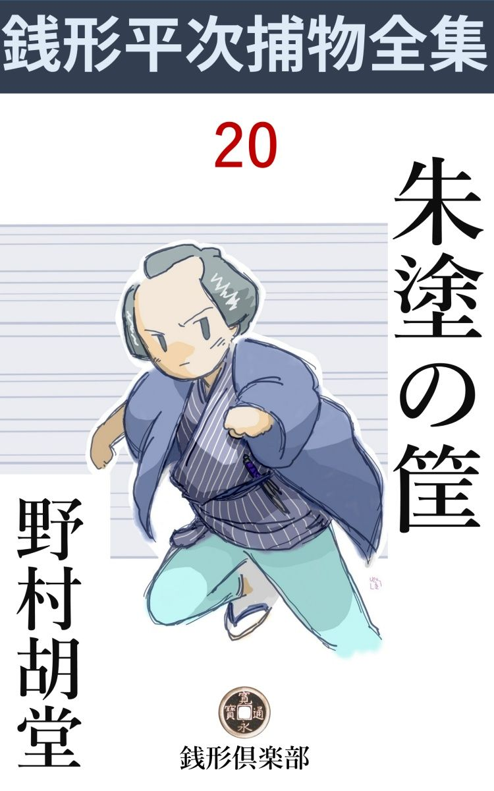
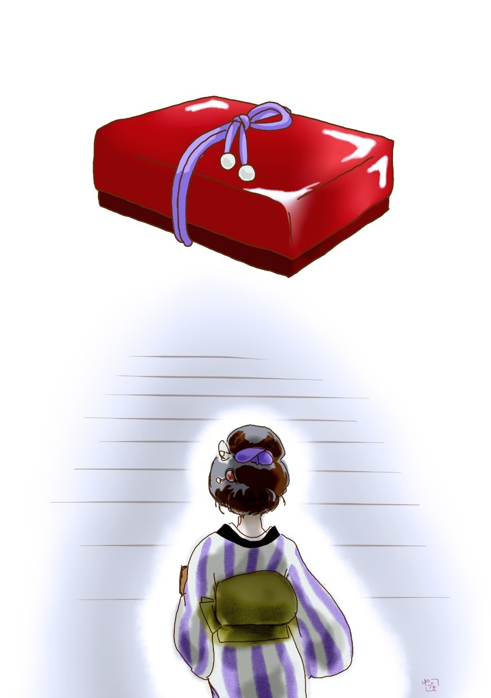

| 朱塗の筐: 銭形平次捕物全集第20話 (銭形倶楽部) | |
| 野村胡堂 | |
| ZENIGATA CLUB (2018) | |

一
「親分、美 い新造 が是非逢わしてくれって、来ましたぜ」
とガラッ八の八五郎、薄寒い縁にしゃがんで、柄 にもなく、お月様の出などを眺めている銭形の平次に声を掛けました。
平次はこの時三十になったばかり。江戸中に響いた捕物の名人ですが、女の一人客が訪ねて来るのは、少し擽 ぐったく見えるような好い男でもあったのです。
「何て顔をするんだ------何方 だか、名前を訊いたか」
「それが言わねえ」
「何？」
「親分にお目にかかって申上げますって、------滅法 美い女だぜ、親分」
「女が美 くったって、名前を仰しゃらない方にお目にかかるわけには参りません。と言って断って来い」
平次は少し中ッ腹だったのでしょう。名前も言わない美い女と聞くと、妙に頑固 なことを言って、ガラッ八を追っ払おうとしました。
「悪者に追っ駆けられたとか言って、莟い顔をしていますよ、親分------」
「馬鹿ッ、何だって冒頭 っからそう言わないんだ」
平次はガラッ八を搔 き退 けるように、入口へ飛出して見ました。格子戸の中、灯 から遠い土間に立ったのは、二十三、四の年増、ガラッ八が言うほどの美い縹緻 ではありませんが、身形 も顔 もよく整 った、確 り者らしい奉公人風の女です。
「お前さんか、あっし に逢いたいというのは」
「あ、親分さん、私は悪者に跟 けられています。どうしましょう」
「ここへ来さえすれば、心配することはない。後ろを締めて入んなさるがいい」
唯 ならぬ様子を見て平次は女を導 き入れました。奥の一間------といっても狭い家、行燈 を一つ点けると、家中の用が足りそうです。
「親分さん、聞いている者はありませんか」
「大丈夫、こう見えても、御用聞の家は、いろいろ細工 がしてある。小さい声で話す分には、決して外へ洩 れる心配はない。------もっとも、外に人間は二人いるが、お勝手で働いているのは女房で、今取次に出たのは、子分の八五郎と言うものだ。少し調子ッ外れだが、その代り内証 の話を外へ洩らすような気のきいた人間じゃねえ」
平次は砕 けた調子でそう言って、ひどく硬張 っている相手の女の表情をほぐしてやろうとするのでした。
「では申上げますが、実は親分さん、私は銀 町 の石井三右衛門の奉公人、町と申す者で御座いますが」
「えツ」
石井三右衛門といえば、諸大名方に出入りするお金御用達、何万両という大身代を擁 して、町人ながら苗字 帯刀 を許されている大商人です。
「主人の用事で、身にも命にも替え難い大事の品を預かり、仔細 あって本郷 妻恋坂 に別居していらっしゃる若旦那のところへ届けるつもりで、そこまで参りますと、かねてこの品を狙っている者の姿を見かけました。------いえ、逢ったに仔細は御座いませんが、------私の後を跟 けて来たところを見ると、どんなことをしてもこの品を奪い取るつもりに相違御座いません」
お町は、こう言いながら、抱えて来た風呂敷包を解きました。中から出て来たのは、少し古くなった桐柾 の箱で、その蓋を取ると、中に納めてあるのは、その頃明人 の飛来 一閑 という者が作り始めて、大変な流行になって来た一閑張 の手筐 。もとより高価なものですが、取り出したのを見ると、虞 美 人 草 のような見事な朱塗 り、紫の高紐 を結んで、その上に、一々封印 をした物々しい品です。
「フーム」
銭形の平次も、妙な圧迫感に唸 るばかりでした。石井三右衛門の使というのが一通りでない上、朱塗の一閑張の手筐で、すっかり毒気を抜かれてしまったのでしょう。このお町とかいう確 り者らしい年増の顔を、次の言葉を待つともなく眺めやるのでした。
「丁度通り掛ったのは、お宅 の前で御座います。捕物の名人と言われながら、滅多に人を縛らないという義に勇 む親分にお願いして、この急場を凌 ごうとしたので御座います。後先も見ずに飛び込んで、何とも申訳御座いません」
お町は改めて、嗜 みの良い辞儀を一つしました。
「で、どうしようと言うのだえ、お町さんとやら」
「この様子では、とてもこの手筐 を妻恋坂 までは持って参れません。そうかと言って、この儘引返すと、一晩経たないうちに、盗まれることは判り切っております。御迷惑でも親分さん、ほんの暫く、これを預って置いて下さいませんでしょうか」
「それは困るな、お町さん。そんな大事なものを預って万一のことがあっては------」
平次も驚きました。命がけで持って来たらしいこの手筐を、そんなに軽々しく預っていいものかどうか、全く見当も付かなかったのです。
「親分のところへ預って置いて危ないものなら、どこへ置いても安心な処は御座いません。どうぞ、お願いで御座います」
折入っての頼み、平次もこの上は没義道 に突っ放されそうもありません。
「それは預らないものでもないが、少しわけを話して貰おうか。中に何が入ってるか見当も付かず、後でどんなことになるかもわからないようなことでは、どんなに暢気 な私でも心細い」
「それでは、何もかも申上げましょう。親分さん、聞いて下さい、こういうわけで御座います」
二
石井三右衛門というのは取って六十八、配偶 は五年前に亡くなりましたが、たった一人の伜三之助は、年寄っ子の我儘 育 ちで、悪遊びから、到頭勝負事にまで手を出すようになり、金看板 のやくざ者になって、三年前に久離 切 って勘当され、二十五にもなるいい若い者が、妻恋坂の知合いの二階に為 すこともなくゴロゴロ暮しているのでした。
銀 町 の店には、養 い娘のお縫 という十九になる女と、手代ともなく引取られている甥 の世之次郎とが、年寄の世話をやいておりますが、どちらも財産目当ての孝行らしくて、三右衛門の気には入りません。
大番頭は禄 兵衛 といって、名前の通りむずかしい四十男、これは三右衛門に代って店の支配をし、大勢の奉公人を取締っておりますが、正直一途で、金 儲 や商売のことにかけては、鬼神のような男ですが、家の中の取締りはあまりよく行き届きません。
三右衛門の力と頼むのは、十三の年から足かけ十二年奉公したお町唯一人だけ。これは赤の他人ですが、それだけに、財産に目をくれるでもなく、昔の人達にはよくあった本当の主人思いで、半身不随 で寝たきりの三右衛門を、自分の親のように世話をしていたのです。
身代は少なく見積っても十万両。支配人任せで寝ている三右衛門は、力になる身寄がないだけに、その始末が苦になってなりません。自分の生きているうちは、どうやらこうやらやって行くが、明日をも知れぬ病身になって見ると、折角築 き上げた大身代を、甥 や養女や、赤の他人に、熊鷹 に餌 を奪 われるように滅茶滅茶にされてしまうのが心外でたまらなかったのです。
そうかと言って、今大急ぎで養子を迎えることもならず、生命 の灯 が次第に燃え尽きるのがわかると、勘当した伜が、つくづく恋しくなったのも無理のないことでした。
しかし、一旦久離切った伜の三之助を、死際にこちらから呼び戻すというのも、昔気質の三右衛門には出来ず、番頭も甥 も、出入の者も気が付かないのか、気が付いても、わざと知らん顔をするのか、口を噤 んで、そのことには触れてくれませんから、病身の三右衛門には、どうすることも出来なかったのでした。
我慢が出来なくなって、呼寄せたのはお町。
「俺が目を瞑 れば、この身代は滅茶滅茶だ。他人に毮 り取られてしまう位なら、------これは内証 の話だが------やくざ でも血を分けた伜に 費われた方が、どんなにいい心持だか知れはしない。俺に万一のことがあったら、用 箪笥 の中の朱塗 の手筐 を、中身ごとそっと妻 恋 坂 の伜へ届けてくれ。その中には諸大名を始め、江戸中の大商人に貸した金の証文が一杯入っている。どんなに下手 に現金を掻き集めても、三万両や五万両にはなる筈だ。店の有金は、禄兵衛始め奉公人達にくれてやってしまい、土地と家作は、娘と甥に半分ずつやるように、これは別に、遺言 状 を書いて置く」
こう言い含 めたのは、ツイ三日前、その翌る日は三右衛門、二度目の中風 に当って、正気を失ったまま、昏々 と睡ってばかりいるのです。
こうなると、家の中にはもう、前々から孕 んでいた財産争いが具体的になって、明日をも知れぬ重病人を抛 って置いて、現金や貸金の勘定に夢中になる有様。朱塗りの手筐の証文 も、何時誰に見付けられて、奪い去られてしまうものか、全く油断も隙 もありません。
お町はこう言いながら、もう一度手筐を平次の方へ押しやりました。
「そんなわけで、今晩という今晩、甥 の世之次郎様が、旦那様の枕許の用箪笥へ手を掛けなすったので、たまり兼ねて持ち出しました。旦那棣は二度目の中風で御座いますから、お癒 りになるものやら癒らぬものやらわかりませんが、道々考え直して見ると、まだ亡くなったわけでもないのに、あわててこの手筐 を持ち出したのは、少し早過ぎたのかもわかりません。------若旦那の三之助様は、それはそれは荒っぽい方で御座いますから、証文をどうかしてしまった頃、旦那様が正気に還 ったりしては、私の申訳も立ちません。そうかと申して、外にお願いするような身寄りもなし、ここへ飛込んだのを御縁に、どうぞ暫くこれをお預り下さいませんか」
平次も暫くは言葉もありません。
大抵のことには驚かないように訓練 が積んでいますが、夢にも見たことのない三万両五万両という大金の証文を、こんな浅間な家に預ることを考えると、さすがに穏 やかな気持ではいられなかったのです。
「驚いたな、お町さん。私 もいろいろの目に逢ったが、石井三右衛門ともいわれる大金持の身上を、まるごと預るようなことになろうとは思わなかったよ」
「それが、親分さんの信用で御座います。あまり遅くなると店の方が面倒になりますから、これでお暇 いたします。それではどうぞ」
「まア、どうも仕様があるまいが、お前さんはどうするつもりなんだい」
「私はこの桐 の空箱だけ持って、妻 恋 坂 へ参ります」
「危ないじゃないか、引返しなすったらどうだい」
「いえ、若旦那の三之助様に親御のお心持も伝え、それに、中身は親分さんに預けてあることも申さなければなりません」
「成程」
「それから、私の後から跟 けて来たのは、石井家の身上を狙う悪者に相違ありませんが、誰が本当の悪者なのか、私にもまだ見当は付いておりません。この空箱を囮 にして、そいつの顔が見てやりとう御座います」
恐ろしいきかん気 、平次もさすがに、この男まさりの女の顔を眺めやるばかりでした。
「そいつは危ない。いくら宵のうちでも、間違いがあったらどうするんだ。ゴロゴロしている野郎がいるから、そこまで送らせよう」
「いえ、親分。そんなことをしたら、曲者は姿を隠してしまいます。私一人なら、馬鹿にしてこの箱 を取る気にもなりましょう」
「そう言ったって」
「こんなに見えても、私は思いの外 力が御座います。小男の世之次郎さんなどには負けることじゃ御座いません。ホホ、ホ」
「そいつは豪儀 だが------」
平次が心配するのも搆わず、赤い手筐を置いたまま、お町はいそいそと街の月の中へ飛出してしまいました。
「ガラッ八」
「ヘエ」
「聞いたか」
「聞きましたよ。驚いた女があるものですね」
「手筐を預って見ると、俺が飛出すわけにも行くまい。手前 直ぐあの女の後を跟けて、後苦労だが妻恋坂まで見届けてくれ。途中でヘマをして、曲者に覚 られるようなことをするな」

「大丈夫ですよ、親分。このお月様だ、相手の女が、五六町離れて行ったって匂 いでも解りまさあ」
「いやな野郎だな」
「ヘッ、ヘッ」
ガラッ八は草履 を突っかけると、それでもそそくさとお町の後を追いました。明神様の方ヘ------。
三
「親分、た、大変」
「何が大変なんだ、騒々しい」
飛んで来たガラッ八。格子戸ヘ一ぺん鉢合せをして、ハネ返されて、それからまた開けて、バアと顔を出しました。
「落着いていちゃいけねえ、直ぐ来て下さい」
「どうしたんだよ」
朱塗の手筐 は、早くも仕舞い込んだ平次。十手を懐へネジ込むと、裾 をつまんで、サッと外へ出ます。まことに慣れた手順で、一分一厘の隙 もありません。
「あの女が殺されたんで」
「何？」
「明神様の裹の闇へ入ると、妙な物音がしたっきり、一向出て来る様子もねえ。駈け付けて見ると、喉 笛 を切られて、血だらけになってブッ倒れているじゃありませんか」
「箱は？」
「奪られてしまったらしいよ、親分」
「曲者は？」
「まるで見当が付かねえ。二三十間遅れて行ったあっしが、駆け付けると右の通りだ。逃げる間も何にもねえ筈だが、犬っころ一匹飛出さないから不思議なんで」
「手前 が間抜 けなんだよ、急いで行けッ」
「息が切れて叶 わねえ」
「死骸はその儘にして置いたのか」
駆けながらも平次は、出来るだけガラッ八の口から要領を引出して、事情の外形 をはっきりさせようとする様子です。
「通りかかった町内の人に頼んで来たんで」
「町内の人とは、どうして判った」
「懐手 をして立って見ていたんだもの、町内の人でしょう」
「------」
現場へ行って見ると、もう五六人の人が立って、騒いでおります。木立 と建物の蔭で、月の光もここまでは届きませんが、近所から持出したものと見えて、提灯 が二つ。街の土に仰反 って、血の海の中にこと切れているお町の死体を、気味悪そうに覗いております。
「御町内の方、掛り合いでお気の毒だが、暫く動かずにいて下さい」
平次はそう言いながら、提灯を借りて、お町の死体を見入りました。後ろから喉 笛 を切った時、下 手 人 の顔を見るつもりで少し顔を反らしたらしく、傷は少し左へ外 れておりますが、そのために頸 動脈 を切られて、一たまりもなく死んでしまった様子です。
仰向けに倒れているところを見ると、多分手筐 を奪い取るために引倒したのでしょう。お町の手は、それでも見覚えの空 風呂敷 を犇 と掴んでおりますが、中の桐箱はその辺には見当りません。
------中を開けたら、曲者もさぞ驚いたろう------平次はツイそんな気持になりましたが、その儘提灯を上げて、死体を取囲んだ五六人の顔を順々に照して行きました。
「八」
「へエ」
「この中に、お前が最初に、死骸の番を頼んだ人がいるか」
「親分、いませんよ」
「本当か」
「本当ですとも、小作りで、------暗くて解らなかったが猫背 の男でしたよ。どうも不思議だ」
「何が不思議なものか、それが下手人だったのよ」
「えッ」
「馬鹿だな、相変らず、------お前は先刻 、二三十間駈け付けるまでここから逃げ出した者はないと言ったろう」
「ヘエ------」
「外に隠れる場所はねえ。急場の思い付きだ。多分一度隠れたその塀の間から、暢気 そうに懐手をしてノソリと出て来たろう」
「そうですよ、親分。まるで見ていたようだ」
「町内の人のような顔をして逃げたんだ。恐ろしく落着いた野郎だ。年 恰好 、人相、着物などを見なかったか」
「それが親分、下手人と解れば見て置 いたんだが------」
「仕様のねえ野郎だな」
「でも、猫背 とわかっているんだから、これはわけもなく見付かるぜ」
「フーム」
「ね、親分。石井一家のうちから傴僂 を探しゃアわけはねえ、行って当って見ましょうか」
ガラッ八はすっかり得意になりました。本当に飛出しそうにするのを、
「いよいよ馬鹿だなア、女から奪った箱はどこへやったか、お前にも見当は付くだろう」
「その辺の藪へでも捨てはしませんか、どうせ、空っぽと解れば」
「空っぽだって、箱に仕掛けがあるかも解らないだろう。人まで害 めて奪った物を、そう易々と捨てるものか」
「すると」
「お前が駈け付けるまでに、背中へ背負 ったんだよ」
「えッ」
「飛んだ傴僂 さ。行って聞いて見るがいい、銀 町 にはそんな者は一人もないに相違ないから、------町内の人はみんなスラリとしているぜ」
「へエ------」
平次の明察。掌 を指すようなのを聞いて、驚いたのは立合いの衆でした。
「銭形の親分だぜ」
「そうだろう。そうでもなくちゃ------」
と言った囁きを聞くと、
「皆さん、どうか、お引取り下さい。飛んだ御迷惑でした。それから町役人にそう言って、ここへ来るように言伝をお願いします」
平次はもう弥次馬を追っ払います。
「さア、こんな所に立っていると掛り合いになるぞ。帰れ帰れ」
ガラッ八は急に強くなります。
暫く、提灯の灯 で、その辺を探していた平次は、やがて、道の上から剃刀を一挺拾い上げました。
「親分、好いものが手に入ったネ」
「フム、あまり好過ぎるよ」
かなり使い込んだ剃刀。柄 を観世縒 で巻いて、生 渋 を塗ってありますから、ひどく特色のあるものですが、不思議なことに、大して血が付いてはおりません。
「親分、何を考えていなさるんだ」
「可怪 なことがあるよ。新しい歯こぼれのあるところを見ると、剃刀 で切ったには相違ないが、一度血を拭いて、仕舞い込んで、また落したのはどう言うわけだ。------余程あわてたのかな」
「------」
「箱を背中へ入れて、お前をかついだ様子じゃ、下手人は余程胆 のすわっている男らしいが------」
平次は何時までも剃刀を睨んで頸 を捻 っておりますが、さすがにこの謎は解けそうもありません。そのうちに、急を聞いて、町役人が、一隊の弥次馬と一緒にやって来ました。
四
石井三右衛門の邸は、大変な騒ぎになりましたが、まだ、正気付いたばかりで、二人の医者が詰めっきりで様子 を見ている主人の三右衛門には聞かせるわけに行きません。
その中に銭形の平次は、疾風 迅雷 の如く、仕事を運びました。その晩、第一番に逢ったのは、支配人の禄 兵衛 、月代 の光沢 の良い働き盛りの男で、背は高い方、少し気むずかしそうですが、その代り堅いのと正直なのが看板 で、家中の者が一目も二目も置いております。
「銭形の親分、あの女が殺されては、差向き主人の世話をやく者がありません。幸い、少しずつ正気付いて来るようですが、お町はどうした、なんて聞かれたら、返事のしようがないだろうと、心配していますよ」
支配人らしい行届いた心配です。
「番頭さん、この下手人はどうも家の中の者らしい。御主人があの様子だから、多分、相続 争 いに絡 んだことじゃありませんか」
「へエ、------そんなことが」
禄兵衛も否定はしませんが、ひどく酢っぱい顔をしております。
「で、お町さんが殺されて、差向きお困りなら、どうでしょう。私 の手から一人女を入れたいんだが」
「と言うと？------」
「そう言っちゃ済まないが、番頭さんはお店が忙しくて奥へは目が届かないだろうし、私も毎日来ているわけにも行きません。幸い、本所の御用聞で、石原の利助親分の娘のお品さん、これは出戻りだが、縹緻 も才智も人並すぐれて、こんなことには打って付けの女です。お町さんの代りに、唯の奉公人という触込みで七日でも十日でも、ここへ置いてやっちゃ下さいますまいか」
平次の頼みはもっともでした。こんな大家 に起った事件の解決を、外から、医者が脈を 引くようにしていたんでは、何時になって解決するかわかりそうもなかったのです。
「それは構いませんとも、早速連れて来て下さい。家の中に親分方の息のかかった方がいなさると、私達もどんなに心丈夫だかわかりません。何分この節は、嫌なことばかりありますんでね------いや、これは私の口から申上げることではない」
禄兵衛はフッと口を噤 みました。
「ところで番頭さん、この剃刀 は、この家の品じゃありませんか」
平次は懐中から、キリキリと手拭 に巻いた剃刀を取出し、禄兵衛の手へ渡してやりました。柄 も刃 もよく拭き込んであるので、もう血の痕 などは容易に見付かりません。
「ヘエ、------これは、見覚えがありますネ。誰のだっけ。何しろ大勢のことですから、忘れてしまいますが、柄にこんな器用な細工をする者は、たんとはおりません。ちょいと待って下さい」
禄兵衛はそう言いながら、通りすがりの下女を呼び入れて、剃刀を鑑定 させました。
「お嬢さんのだアよ、番頭さん。家中で一番よく切れる剃刀じゃねえか」
相模 訛 の下女は、何の遠慮もなくそう言って、アタフタとお勝手へ行ってしまいます。
「お嬢さんと言うと？------」
「亡くなったお内儀 さんの遠縁の者で、此家 の養 い娘ですよ」
「その娘さんに逢わせて頂きましょうか」
五
平次は間もなく、養い娘のお縫 の部屋に案内されました。
十九と聞きましたが、境遇 のせいか、年よりはふけて、二十二三と言っても通るでしょう。少し陰気な感じですが、素晴しい美人で、何とかく薮 蔭 に咲き誇 っている月見 草 を思わせる娘でした。
「お嬢さん、御免下さい」
「------」
お縫は何と挨拶していいか、見当も付かない様子で黙礼しました。
「この剃刀 はお嬢さんのでしょうね」
「え」
「お町が殺された場所にあったんですが」
「えッ」
見る見るお縫の顔は真蒼になりました。唇からサッと血の気が失せると、眼を大きく見開いて、頬の肉が、いたましい痙攣 を起します。
「暫くお預りしますよ、お嬢さん」
「------」
「今晩｀御飯が済んでから、どこかへ出かけませんか」
と改めて平次。
「え、どこへも」
「奉公人達は、暫くの間、お嬢さんを見掛けなかったと言いますが、どこにいなすったんです」
「ここにおりました」
「ここに？」
「え、私はどうかすると、半日位、誰にも逢わずにここにいることがあります」
もうこれ以上は訊くこともなかったでしょう。
「お邪魔でした。お嬢さん、お寝みなさいまし」
番頭の禄兵衛を顧 みて、今度は店の方へ。
「親分、あのお嬢さんは、人などを殺せるような人間じゃありません。剃刀はお嬢さんのでも、これは私が請 合 いますよ、誰かお嬢さんの剃刀を持出した奴があるのでしょう」
「さア」
平次はそれには肯定 も否定も与えませんでした。
間もなく、番頭の部屋を借りて、呼出して貰ったのは、主人の甥 の世之次郎。
「ヘエ、今晩は、御苦労樣で」
店で働いているだけに、如才 のないことはお縫と反対で、敷居 際 に手を突いて、支配人と平次の顔を等分に見上げました。
小作りで、年の頃二十五六、少し三白眼 ですが、色の浅黒い、なかなかの男前。なんとなく軽捷 で抜け目のなさそうな人間です。
「世之次郎さんと言いましたね」
「ヘエ」
「御主人に万一のことがあると、総領が勘当されていなさるそうだから、お前さんが跡取りというわけかネ」
平次は妙に立ち入ったことをツケツケ言います。
「飛んでもない、親分。そうでなくてさえ、世間の口がうるさくて叶 いません。そんなことはどうぞ仰しゃらないように願います」
「まア、いいやな、お前さんは運が好いんだ。それはそうと晩飯の後でどこへも出なさりはしまいネ」
「今晩ですか？」
「お町が殺された刻限 に、お前さんはどこにいなすったか訊きたいんだ」
平次の舌は、恐ろしく辛辣 です。
「へエ、------お町は戌刻 （八時）少し前に殺されたって話ですから、その時分私は町内の銭湯へ行っていましたよ」
「銭湯？ 此家 では風呂は立ちませんか」
と平次。
「ありますよ。雇人 が入るんで、毎晩立ちますが、私は疳 性 で、流しの広い、上り湯のフンダンにある銭湯でないと入ったような気がしません」
「成程」
「私が内風呂へ入らないのは、家中の者が皆 な知っております」
「それにしても、宵 から銭湯は、遠慮がなさ過ぎはしませんか」
「へエ」
主人の甥 というにしても、店の者としては少し我儘が過ぎるようです。
「何刻 位入っていましたかい」
「一刻とも入りはしません」
「そんな長湯ですか、お前さんは？」
「ヘッ、少し稽古 事をしているもんで」
「成程」
小唄の師匠 へ行って、一刻も変な声を出して唸 って、帰りには手拭を濡 らして、銭湯へ行ったような顔をするというのは、その頃の大商人の奉公人にはよくあることでした。
これは銭湯と、町内の稽古所を調べさえすれば判ると思ったのでしょう。平次はそれっきりにして、あとは店中の奉公人、一人一人に逢って見ましたが、さて、何の手掛りもありません。
六
平次と一時張合 って、近頃はすっかり折れてしまった本所の御用聞、石原の利助の娘、お品------平次の女房お静とは仲好しの美しいお品------は翌る日、支配人禄 兵衛 の手で、石井家へ入り込みました。
表向は殺されたお町の代り、病人の世話をするという名儀ですが、実は、お縫や世之次郎をはじめ、雇人 全部を見張るため、お品の骨折りも一通りではありません。
主人三右衛門は、幸い翌る日あたりから、少しずつ意識 を恢復して、お品が行ってから三日目には、お町のいないのを不思議そうに物問いたげな顔をすることもありました。
朱塗りの筐 は、騒ぎが一段落済むまで平次が預り、親の三右衛門がお町に大事を託 した心持をくんで、勘当された伜 の三之助を石井家へ入れてやろうとしましたが、これは番頭の禄兵衛が強硬 に反対して、沙汰 止 みになりました。
三之助は無法者で、飲む買う打つの三道楽の外に、親の金を持出して、やくざ 仲間にやるのを楽しみにした位の人間ですから、------親旦那の思召しはさることながら、この家に入れたら、どんなことをするかもわからない、と禄兵衛は言うのです。それに、相続争いが、深刻になっているから、お縫や世之次郎と血で血を洗うような三 つ巴 の醜 い争いが始まるに相違ない。旁々 三之助を呼び戻すのは、もう少し待って貰いたいと言う言葉にも理窟 があります。
平次も、暫くその意見に任せて、成行 を見ました。が、お町を殺した下手人はどうしても判らず、桐の空箱の行方もそれっきりわかりません。
三日目に、番頭の禄兵衛は、店で紙入れを紛失 しました。縫いつぶしの見事なものでしたが、中には幾らも入っていないから、騒ぐまでもあるまいと、自分の胸に畳んで置くつもりらしい様子でしたが、そんなことは知れ易 いもので、半日経たないうちに、店中で知らないものはない有様でした。
五日目に、お品は家へ帰りました。平次ヘ一通り報告した上、父親の利助が、兎角身体が勝 れないので、それを一晩見てやるためでもあったのです。
全く三右衛門はこの二三日ことの外快 よく、時々は廻らぬ舌で物さえ言うようになったので、この様子で三廻りもすれば、もとの身体にはならなくとも、時々帳尻 位 は見られるようになるだろうと言うほどになりました。
その晩、主人の部屋に泊ったのは、相模 女 のお村。始めのうちは、大きい眼を開いて、看護 るつもりでしたが、次第に猛烈に睡気 に襲 われると、我にもあらず、健康な鼾 をかいて寝込んでしまいました。
眼の覚めたのは翌る朝。窓を開けて、朝の光と空気を入れて見ると。主人の三右衛門、頸 に赤い細紐を巻かれたまま、少し乗り出し加減に、眼を剥いて死んでいたのです。
「ワッ、た、助けてくんろッ」
お村はよつん這いになって飛出しました。
恐ろしい不安を孕 んだ、ハチ切れるような騒ぎが、猛火の上の鍋を沸 らせるように、家の中を煮えくり返らせました。
「誰もここへ入るんじゃないぞ。お前は銭形の親分を呼んで来い。お前は医者だッ」
支配人の禄兵衛が、たった一人でてんてこ舞をしていると間もなく、銭形の平次、子分のガラッ八をつれて飛んで来ました。
続いて、お品、町内の医者、町役人、家の中は唯 もうごった返します。
「銭形の親分、申訳がありません。たった一晩の油断で」
お品が面目なげに言うと、
「なアに、私はこうなることを見通していたんだ。お品さんが一年泊っていりゃア、三百六十六日目にこの家の旦那がやられるよ」
「えッ」
「お品さんは証拠 固 めの時役に立つんだ。安心していなさるがいい」
平次はお品を慰 めて置いて、変事のあった部屋へ行きました。
七
「あッ、親分待っていました」
入口に頑張 っていたのは支配人の禄兵衛。
「番頭さん、大変なことになりましたね」
「どうしていいか、私には見当も付きませんが、兎に角、ここへは、親分が見えるまで、誰も入れないつもりで頑張っていましたよ」
「それは有難い、早速見せて貰いましょうか」
平次は部屋の中へ入って行きました。中風 に当った半病人ですが、末期 の苦しみはさすがに物凄く、物馴れた平次も思わず顔を反 けます。死人の頸に巻いたのは、皮肉なことに、同じ部屋に居眠りしていたお村の赤い細 紐 で、蒲団の裾 の方には、立派な縫 いつぶしの紙入れが一つ落ちております。
拾い上げて見ると、中には小粒が少々と、鼻紙だけ。
「この紙人れは誰のでしょう」
平次がそれを持って部屋から出ると、
「あッ」
一目、番頭の禄兵衛が飛上がりました。雇人 達は顔を見合せるばかり、口を利くものもありません。
「番頭さんが二三日前に失 くしなすった紙入れというのは、それじゃ御座いませんか」
とお品。
「え、そ、そうですよ。どうして一昨日 なくなった私の紙入れが、そんな所に落ちていたんでしょう」
禄兵衛は歯の根も合いません。
「番頭さん、中を改めて下さい。中身に変りはありませんか」
と平次。
禄兵衛は黙って紙入れを取上げましたが、一通り中を検 ためて、
「紙一枚、小粒一つ無くなってはいません」
まじまじと頸を捻 っております。
「番頭さん、心配には及びません。これはお前さんを罪に落そうとする術 ですよ。幸いこの紙入れが三日前になくなったことは、大勢の人が知っているようだし、それに------」
平次は部屋に入ると、主人の死体の頚に巻付いた赤い紐を解いて持って来ました。
「この紐で殺したようには見せかけているが、それも細工で、こんな細い紐で、人間一人殺せるわけはありません。------この通り」
平次は両手へ紐を絡 んで引くと、小布 を縫って拵 えた赤い紐は何の苦もなく、燈 芯 のようにフッと切れます。
「あッ」
驚き騒ぐ人々を尻目に、平次はもう一度主人の死体のところへ帰って行きました。
「御覧の通り、頸には、絞め殺した時の紐 の跡が付いているが、それで見ると、刀の下 げ緒 か前掛の紐か、------兎に角、恐ろしく丈夫な一風編 み方の変った真田 紐 だ」
「------」
皆んなはもう一度顔を見合せました。
「番頭さん、済みませんが、この部屋の隣は納戸になっているようだが、戸の隙間から変なものが見えますよ、拾って来て下さい」
番頭の禄兵衛は黙って隣の納戸へ入りましたが、不気味そうに手ヘブラ下げて来たのは、焦茶 色 の丈夫な真田紐。いや丈夫な真田紐の付いた手代の使う前掛です。
「あッ、世之次郎さんのだ」
誰かがとうとう口を滑らせました。
「八」
平次が一つ目くばせすると、ガラッ八は飛鳥 の如く、世之次郎の背後 へ廻りました。
「野郎ッ、騒ぐな」
手頸に絡 むのは、蛇のような捕縄 。
「あッ、俺は、俺は何にも知らない」
世之次郎は、あまりのことに、驚くことも忘れたように、口を開いて茫然 と立ちつくしました。
「紙入れや赤い紐の細工は器用だが、さすがに叔父を殺した自分の前掛を持って行くほど胆 が太くなかったんだな。罰当 りな奴だ」
妙な羽目になった禄兵衛は、主人筋の世之次郎へ、掴 みかかりそうな様子を見せます。あまりのことに腹を据え兼ねたのでしょう。
それから十日目、石井一家の騒ぎに関係した者は全部八丁堀の吟味 与力 、笹野新三郎の役宅に呼出されました。
本当の調べは、町奉行でやることにはなっておりますが、大岡越前守とか、遠山左衛門尉 とかいう、後世までも聞えた名奉行は兎も角、大抵のお白洲 では、筋書通りそれを繰り返して口書 拇印 を取り、最後の言い渡しをするだけであったのです。
幕末の奉行などは自分で罪人を調べたものは殆 どなく、与力も調べの出来るのは余程の傑物 で、大抵は岡っ引が引っ叩きながら調べ、お白洲は型だけのものであったとさえ言われております。
この日、笹野新三郎の前に呼出されたのは、石井の支配人禄兵衛、三右衛門の甥 世之次郎、これは伝馬町の仮牢 から伴れて来た縄付きのまま、それに養い娘のお縫、勘当されていた伜の三之助、下女のお村、それに銭形の平次と、八五郎のガラッ八と、利助の娘のお品が加 わりました。
「平次、お前の望み通り、ここへ皆な集めたが、一体何を訊こうと言うのだ」
笹野新三郎、何か期待するような調子で、微笑を浮べながら一同を見廻しました。
「へエ、この石井三右衛門一家の騒動は、ひどく手 古 摺 らせましたが、漸 く目鼻が付きました。順序を立てて申上げると明神裏でお町を殺したのは、あれは世之次郎では御座いません」
「何？」
新三郎も少し予想外の様子です。
「あの時世之次郎は、銭湯へ行ったような顔をして、町内の小唄の師匠のところへ行って、黄色い声を張り上げていたことは、大勢の証人があってたしかで御座います」
「フーム」
「それに。死骸の傍 に落ちていた剃刀 は、一度血を拭いて、改めて思い付いて捨てたもので、あれは、余程悪賢 い奴のやったことで御座います」
「------」
「お縫でないことは、わざわざ自分の剃刀を捨てて来たのでも解ります。第一お縫は、お町と仲が惡かったそうで、背後 から肩へ手を掛けて、馴々 しく剃刀を喉 へ廻されるまで黙っている筈もなく、それに、下手人が女でないことは、八五郎が見て知っております。背の高い低いなどは、ほんの一寸の間ならどうにでも誤魔化 せます」
「成程」
「それから、主人の三右衛門を殺したのも、世之次郎では御座いません」
「えッ」
平次の話の途方もなさに、新三郎始め、庭先に列 んだ一同思わず声を出しました。
「三日も前から、番頭の紙 入 れを盗んで、それを証拠にしたと言うのは、少し細工が過ぎます。紙入れを盜めば騒がれるに決っておりますから、そんなものは証拠になりません」
「------」
「それほど細工の上手な世之次郎なら、何もわざわざ自分の前掛 で、叔父を紋め殺すようなことをするまでもない筈です。紐や縄はどこにでもあります。------その真田 紐 を、覗けば見えるような隣の部屋へ抛 り込んで、燈芯のように弱い赤い紐なんかを卷いて置くのも細工が過ぎて本当らしくありません」
「成程、理窟だな」
新三郎もすっかり引入れられました。
「私がお品さんをあの家へ入れて置いたのは、下手人がお品さんに見せようと思って、どんな細工をするか、それが知りたかったのです」
「それだけ解っているなら、どうして寃 の世之次郎を縛って、真実 の下 手 人 を逃して置いたのだ」
笹野新三郎は、改めて平次に訊ねました。
「それは旦那、下手人に油断させて、尻尾を出させたかったからで御座います。そうでもしなければ、私の腹の中で見当を付けているだけで一つも証拠というものがありません。世之次郎には気の毒ですが、叔父の敵討のために苦労したと思って、あきらめて貰うよりほかに仕方がありません」
「その証拠は何だ、下手人は誰だ」
「もう申上げるまでもないようです。あの顔を御覧下さい」
ハッと思うと、平次に指された支配人の禄 兵衛 は、立ち上がって庭口へ逃げようとしているのでした。
「逃げるのか、野郎ッ」
飛付いたガラッ八、力だけは二人前もあります。あッという間に禄兵衛を叩き伏せ、犇々 と縛り上げてしまいました。
「あの野郎です。店から現金 で一万両も持出して、妾を二人も囲 っておりました。三右衛門が丈夫になって、帳尻 を見たら一たまりもありません。それに、三右衛門が死んで、世之次郎を罪に落せば、総領の三之助は人別を抜かれておりますから、あとはお縫一人、あの大身代が支配人の自由になります。朱い手筐 の証文を、三之助へやるまいとしたのも、つまりは行々 自分のものにするつもりだったので御座います」
平次の説明は疑いを挾 む余地もありません。
「そうか、太い奴があるものだな。すぐ口書 を取って、奉行所へ引いて行け。皆の者、御苦労であった。別して世之次郎は気の毒だ。三之助が跡目 相統済んだ上は、よく世話をしてやるがいい」
笹野新三郎はこう言って立上がりました。平次には別に褒め言葉もありませんが、平次に取って、その優しい眼が、雄弁に手柄を讃美 しているので十分だったでしょう。
（編注）
作品中には、身体の障害や人権にかかわる、差別的な語句や表現が見られますが、本書が成立した当時の時代背景等が現代とは異なる古典的な文学作品でもあり、著者が故人でもありますので、底本のままとしました。ご理解、ご諒承のほどをお願い申し上げます。
著者---野村胡堂
挿絵---萩 柚月 © 2017
初出---「文藝春秋オール讀物號」昭和七年十一月号 文藝春秋社
底本---「錢形平次捕物全集」第一巻 河出書房 昭和三十一年五月五日初版
編集・発行 銭形倶楽部